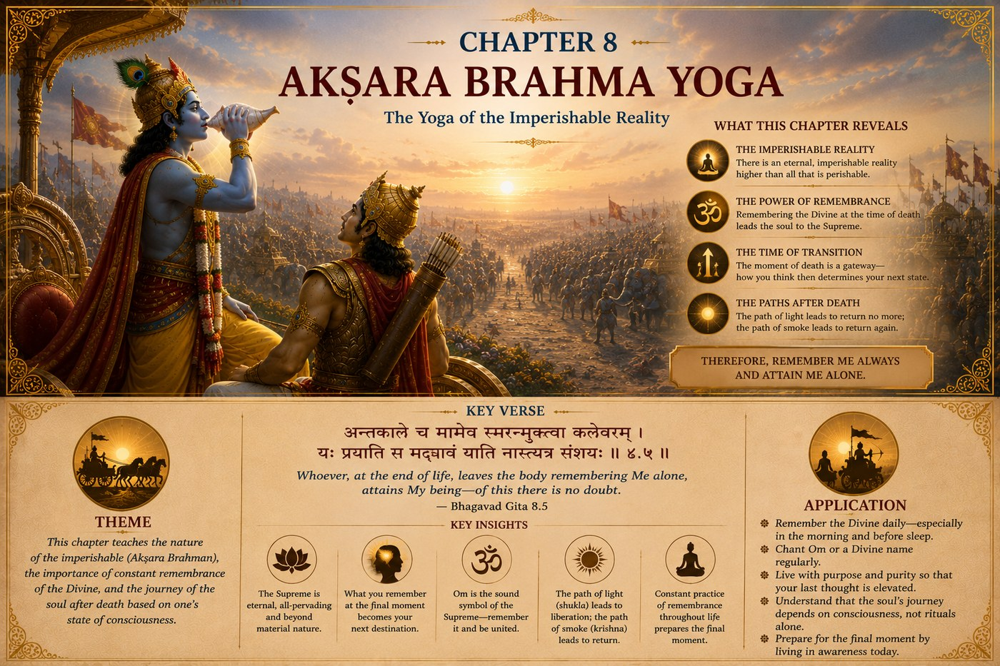

The GITA Project › Week 8 · Chapter 8

Week 8 · Chapter 8 — Akṣhara Brahma Yoga: The Yoga of the Eternal Reality
Student Theme — What We Remember Shapes How We Live
Chapter SummaryWhat Happens in Chapter Eight
Chapter Eight begins with Arjuna asking profound questions about Brahman, the individual self, karma, and the nature of remembrance at the time of death. Lord Shri Krishna explains that one's final remembrance reflects the direction of one's entire life. A life centered upon the Supreme Lord prepares the mind to remember Him naturally at the final moment. The chapter describes the imperishable reality, the cycles of creation and dissolution, and the two spiritual paths spoken of in the scriptures. Lord Shri Krishna encourages constant remembrance, disciplined practice, and unwavering devotion so that every moment of life becomes preparation for union with the Divine.
How the great teachers illuminate this chapter — each from their own lineage of wisdom.
Explains that the imperishable Brahman is the eternal reality beyond birth and death. The remembrance of the Lord at life's end reflects knowledge cultivated throughout life. Continuous contemplation of the eternal Self frees the seeker from identification with the temporary world and leads toward liberation.
Teaches that loving remembrance of the Supreme Lord is the fruit of lifelong devotion. The final thought is not an isolated event but the natural culmination of a life lived in surrender, worship, and faithful service. Constant devotion prepares the soul to attain the Lord.
Emphasizes that liberation depends upon the grace of the Supreme Lord. Faithful remembrance, righteous living, and steadfast devotion direct the soul toward its highest destination. Human effort is important, but Divine compassion ultimately guides the seeker beyond worldly existence.
Presents this chapter as a reminder that character is built through daily habits. The thoughts we cultivate each day shape our responses in life's most significant moments. Living with purpose, discipline, and remembrance of higher values prepares us to face both life's challenges and its final transition with confidence.
Highlights that remembrance of God should become a joyful and continuous practice rather than something reserved for the final moments of life. By repeatedly directing the mind toward the Divine through prayer, meditation, and selfless living, the seeker gradually develops unwavering faith and inner peace.
Common Threads of Dharma All five teachers affirm that life is preparation for its highest purpose. Constant remembrance of the Supreme Lord, disciplined living, devotion, and freedom from worldly attachment prepare the seeker for spiritual fulfillment. Dharma is lived every day, and the habits formed throughout life shape one's final destination.
…we begin asking what truly lasts when everything around us seems to change.
Life is constantly changing. We grow older. Friendships evolve. Schools change. Families experience new beginnings and new challenges. Technology advances. Seasons come and go. Even our thoughts and emotions change from one day to the next. Yet deep within every human heart lives another question: Is there something that never changes? Chapter Eight invites us to explore one of the most profound teachings of the Bhagavad Gita — that beyond everything that changes lies an eternal reality. Understanding that reality changes the way we live every moment of our lives.
One question — When so much around you keeps changing, is there anything you can count on to stay the same?
A moment you may know — A year ends, a friendship shifts, a familiar place closes — and you find yourself quietly wondering what is actually solid underneath it all.
This chapter's promise — You will discover that what we hold in memory and value each day gradually shapes who we become, and that a life anchored in the eternal can stay steady through any change.
What lasts when everything changes?
As Lord Shri Krishna continues revealing deeper spiritual truths, Arjuna asks a series of thoughtful questions. What is Brahman? What is the true Self? What is Karma? What does it mean to remember the Divine? What happens at the end of life? These are not questions born out of fear. They are questions born from a sincere desire to understand life more completely.
Lord Shri Krishna answers each question patiently. He teaches Arjuna that while the body changes, while circumstances change, and while the world itself continually changes, the eternal truth never changes. Dharma remains constant. The Divine remains constant. The Self remains eternal. Understanding this brings both clarity and peace.
Understanding the SituationImagine standing beside a river. The water flowing past you is never the same. Every second new water arrives. The river appears constant, yet everything within it is continually changing. Life often feels like that river. Each day brings new experiences, new opportunities, new challenges, new emotions. If we try to find lasting happiness only in changing things, we may constantly feel uncertain.
Lord Shri Krishna teaches Arjuna to anchor his life in what is eternal rather than what is temporary. This does not mean ignoring the changing world. It means learning to live within it without losing sight of what truly endures.
The Court of Dharma™Six steps into the eternal reality
- One Situation
- Arjuna asks Lord Shri Krishna to explain the eternal truths that lie beyond the changing experiences of everyday life.
- One Dilemma
- How do we live fully in a world that is constantly changing while remaining connected to what is eternal?
- One Question
- What should I hold onto when everything around me seems to change?
- One Conversation
- Lord Shri Krishna explains that Brahman is the eternal reality that exists beyond change. He reminds Arjuna that the Ātman is not limited by the physical body — the body is born, grows, ages, and eventually returns to nature, while the Self continues. He also teaches that the direction of our thoughts matters: the mind becomes shaped by what it repeatedly remembers, values, and loves. Therefore He encourages Arjuna to remember the Divine while fully performing his responsibilities. Lord Shri Krishna never asks Arjuna to abandon life; He teaches him how to live every moment with awareness of the eternal.
- One Virtue
- Steadfastness — the ability to remain grounded even when circumstances change: staying true to Dharma when life becomes uncertain, remembering our values when others forget theirs, choosing integrity when shortcuts appear attractive. A steadfast person is not stubborn; a steadfast person is anchored.
- One Life Practice
- Begin each morning with one quiet minute of gratitude and one value to carry through the day. (Full practice below.)
A verse on remembering the eternal
Verse 1 — Remember, and do your own duty · 8.7
तस्मात्सर्वेषु कालेषु मामनुस्मर युध्य च ।
मय्यर्पितमनोबुद्धिर्मामेवैष्यस्यसंशयम् ॥
tasmāt sarveṣhu kāleṣhu mām anusmara yudhya cha
mayyarpita-mano-buddhir mām evaiṣhyasyasanśhayam
“Therefore at all times think upon Me only and fight. With mind and Reason set on Me, without doubt thou shalt come to Me.”
— Bhagavad Gita 8.7 · trans. Annie Besant (1922), public domain — via Wikisource
What this does NOT mean — it is not a call to violence
Krishna is speaking to Arjuna, a soldier already standing on a battlefield he did not choose, whose own rightful duty in that hour was to defend the just side. The verse is not telling anyone to seek out a fight, and the Gita never glamorizes violence. For us, the living heart of the verse is its first half — “always remember Me” — joined to “do your duty.” The teaching is that we do not have to withdraw from the world to stay connected to the Divine: we can keep the Divine in mind while honestly doing whatever our own rightful responsibility happens to be — studying, helping at home, standing up for someone, finishing hard work. Remembrance and responsibility belong together.
Words to Remember — sarveṣhu kāleṣhu at all times · anusmara remember continually · arpita surrendered, offered · mano-buddhiḥ mind and intellect.
In plain words. Krishna gives Arjuna a way to hold two things at once: keep the Divine steadily in mind, and still do the real work in front of you. We become shaped by what we remember most; so a life that keeps returning, gently, to its highest values will naturally start to reflect them. The goal is not to think of the eternal only at life's end, but to live each ordinary day in a way that keeps what matters close to the heart.
Reflect: What is one value you could quietly “remember” tomorrow, even in the middle of a busy day?
This chapter also touches gently on life's final moments. Krishna's counsel is comforting rather than frightening: a life practiced in remembrance and Dharma is never caught unprepared, because every ordinary day has already been quiet preparation. When every day is lived according to Dharma, every day becomes preparation for eternity.
Dharma LensRemembering what matters — while the pressure says forget it
Chapter Eight teaches that we can hold onto our deepest values while fully doing our duty. But real life often makes those two feel like they are pulling apart.
A situation without an obvious answer
Meera's grandmother is seriously ill, and the family takes turns sitting with her. The same week, Meera has final exams that will affect where she can study next year — the future she and her parents have worked toward for years. Her parents tell her to focus on her exams; they'll manage the hospital. But Meera keeps thinking she may not have many more days with her grandmother. If she studies, she is doing her genuine duty and honoring years of effort — yet part of her fears she will regret the hours she didn't spend at the bedside. If she goes to the hospital, she is present for someone she loves — yet she may harm the very future her family is counting on.
Both choices honor something eternal — love, and responsibility. So which is the steadfast one? Is remembering “what truly lasts” a reason to be at the bedside, or a reason to trust that love holds steady even while she does the duty in front of her?
The Gita does not hand Meera a formula. Steadfastness here is not one fixed action — it is refusing to let panic or guilt make the choice for her. She might sit her exams with her grandmother held in her heart and visit when she can; she might decide some hours at the bedside matter more than a few marks; she might find, with her family, a middle path neither parent nor student first imagined. More than one of these can be a genuinely dharmic answer — what makes it steadfast is that it comes from love and honest duty rather than from fear. Whatever she chooses, remembrance is the thread: she does not have to abandon one love to honor the other.
Character in Practice · SteadfastnessWhat it means. Remaining grounded when circumstances change — staying true to Dharma and to your values even when life is uncertain, and even when others forget theirs.
What it does not mean. Being stubborn, rigid, or refusing to adapt. A steadfast person is anchored, not immovable — like a deep-rooted tree that bends in the wind without being uprooted.
In daily life. Keeping a promise when it becomes inconvenient; holding to honesty when a shortcut is offered; returning to a good habit after a bad day instead of abandoning it.
How it's misread. As boring or inflexible. In truth, steadiness is what lets you take risks and weather setbacks — it is the calm center that change cannot easily shake.
Recognizing progress — without self-righteousness. You notice you recover faster after disappointment, and your values stay recognizable across good weeks and hard ones. Pair steadfastness with gentleness, so that being anchored never hardens into being harsh.
Chapter Eight reminds us that the eternal is not separate from everyday life. Remembering the Divine is not reserved for special occasions — it is a way of living. The more our thoughts become aligned with Dharma, the more naturally our actions reflect wisdom. Think of the study routine you keep even when motivation dips, the friend you stay loyal to when a group turns on them, the value you don't quietly drop just because no one is watching. Those small, repeated acts of remembrance are exactly how character is built. Temporary experiences are part of a much larger journey, and every ordinary moment lived with awareness, gratitude, and purpose becomes part of who you are becoming.
Leadership LabImagine two students preparing for graduation. One focuses only on the ceremony — the single big day. The other focuses on the person they are becoming throughout the years leading up to it. Who is better prepared for life?
Lord Shri Krishna teaches that lasting success is never built in one moment. It grows through thousands of daily choices. Character is not formed during life's biggest decisions alone; it is quietly shaped by the values we practice every single day. Every small choice becomes part of the person we are becoming — and the leaders others trust most are the ones whose values stay the same whether the moment is grand or ordinary.
Discussion Circle- ObserveWhat are the questions Arjuna asks at the start of this chapter? What do they have in common?
- InterpretKrishna says to “always remember Me” and “do your duty.” Why do you think He joins remembrance and action together instead of choosing one?
- ConnectDescribe something that changed in your life this past year. What value helped you stay steady through it?
- Ethical tensionReturn to Meera. When love and duty pull in different directions, how can a person tell whether a choice comes from steadfastness or from fear?
- ApplyWhat is one small daily act of “remembering” a value you could practice this week?
- ChallengeSomeone says, “Thinking about what lasts forever is a waste of time; just live in the moment.” Respond using this chapter — fairly to both sides.
Purpose: practise steadfastness by building a small daily habit of remembrance, and notice how it shapes ordinary choices. Time: about 5 minutes each morning and 2 minutes each evening, for one week (15–30 min total effort) · Format: individual, with a short share-back in class · Materials: a journal or notes page, a quiet spot.
- Each morning, before the day gets busy, sit quietly for one minute and take a few slow breaths.
- Offer a simple prayer or thought of gratitude — name one thing you are thankful for.
- Choose one value to carry through the day: kindness, honesty, patience, respect, or responsibility.
- Write that value at the top of your page so you'll see it.
- In the evening, take two minutes and ask: Did I remember that value during today's challenges? Write one honest sentence about how it went.
- At week's end, read back your seven entries and notice any pattern. Bring one thing you learned to share in class.
The One Value Practice
Each day, pick one value and quietly “remember” it — not by announcing it, but by letting it guide one real choice: a patient reply, an honest answer, a kind act no one asked for.
Small daily moments of remembrance gradually shape lifelong character. Notice how a single remembered value can change the feel of an entire day.
1. Personal. Think of something that changed in your life this past year. What value helped you remain steady through it?
2. Dharma. Where is it hardest for you to keep your values when the pressure or the crowd pushes the other way?
3. Character. If Lord Shri Krishna were sitting beside you today, what would He encourage you to hold onto that will never lose its value?
4. Action commitment. One value I will “remember” each morning this week, and how I'll keep it in view:
5. A private question (you never have to share this): Is there a change or loss you are quietly afraid of — and what helps you feel steady when you think about it?
For a parent or guardian — please listen more than you speak. This is a conversation, not a quiz.
1. When life changed a lot for you, what value or belief helped you stay steady?
2. Is there something you learned to treasure more once you realized it wouldn't last forever?
3. What is one thing you hope I'll always hold onto, no matter how much my life changes?
Teacher Note — Chapter 8
Objective: students can explain that the Gita points beyond the changing world to an eternal reality, and that what we habitually remember and value shapes the character we build day by day.
Sensitive-topic alert: verse 8.7 contains “do your duty of fighting the war,” and the chapter touches mortality. Use the callout framing — remembrance joined to one's own rightful duty, never a call to violence — and keep any talk of life's end in the register of comfort and perspective, not fear. Watch for a student for whom illness or loss is currently raw, and see the well-being note.
Likely question: “Does Krishna really tell Arjuna to go to war?” → He addresses one soldier's specific, already-present duty on a battlefield he didn't choose; the transferable teaching is remembrance plus doing whatever our own honest duty is.
Misconception to avoid: that “remembering the Divine” means withdrawing from ordinary life, or that thinking about mortality is morbid. The chapter's point is the opposite — full engagement with life, lived with awareness.
Transition to Chapter 9: having learned to anchor in the eternal, Arjuna is ready to hear Krishna reveal the “Royal Knowledge” and “Royal Secret” — that the Divine is not distant but present, accessible, and near to every sincere heart.
A note on well-being. This chapter speaks about change, and gently about life's final moments. That can bring up real feelings — especially if you have lost someone, or someone you love is unwell right now. That is completely okay, and you never have to share more than you want to. The Gita's message here is meant as comfort and perspective, not fear: that love and goodness are not erased by change. If these thoughts feel heavy, please talk with a trusted adult, a family member, a teacher, or a school counsellor. Reaching out is a form of steadfastness, not weakness.
Week in One Minute
- Teaching
- Beyond everything that changes lies an eternal reality; we stay connected to it by remembering the Divine while fully doing our own duty.
- Key verse
- “Therefore, always remember Me and also do your duty…” — 8.7
- Dharma insight
- What we repeatedly remember and value quietly shapes who we become — so ordinary days are where character is built.
- Practice
- Begin each morning with one minute of gratitude and one value to carry through the day.
A question to carry forward — When everything else changes, what will I choose to remember?
In Chapter Nine, Lord Shri Krishna reveals what He calls the “Royal Knowledge” and the “Royal Secret.” Arjuna discovers that the Divine is not distant. The Divine is present. Accessible. Compassionate. Available to every sincere heart. The journey now moves from understanding the eternal to discovering the limitless love and grace of the Divine.